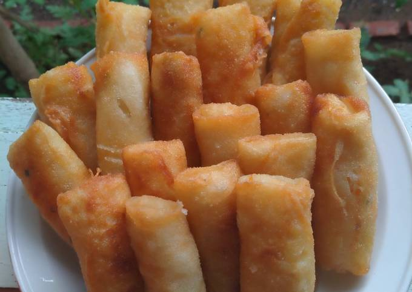
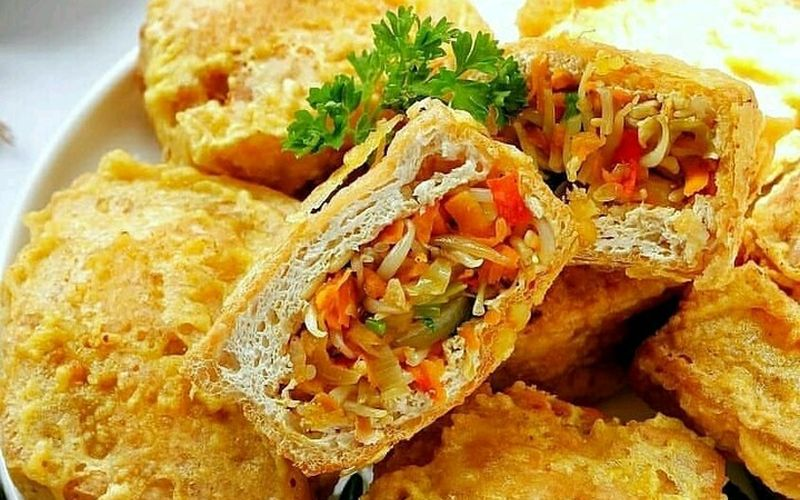
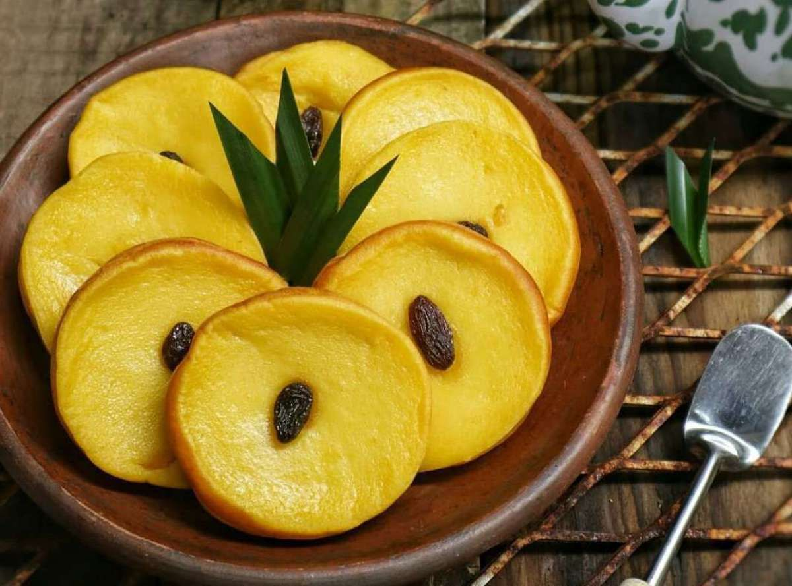

Risol Mayo
.jpeg)
Risol mayonnaise adalah jajanan tradisional berbentuk gulungan yang memiliki berbagai isian, dari ragout, telur, hingga smoked beef. Biasanya, risol disajikan dengan cara digoreng dan dimakan bersama saus sambal. Perpaduan rasa renyah dan creamy pada risol ini menciptakan rasa yang gurih. Dengan Harga Rp3000 saja kamu sudah bisa menikmati risol mayo yang enak dan mengenyangkan.
Kroket
Kroket/Risol Bihun merupakan salah satu jenis camilan atau makanan pendamping yang terbuat dari campuran tepung terigu dan telur yang digoreng tipis kemudian digulung dengan berbagai macam isi di dalamnya. Isi risol biasanya berupa olahan berbagai sayur, kentang, jamur, daging ayam, sapi, ikan, hingga udang. Penganan ringan tapi mengenyangkan ini konon berasal dari bahasa Belanda yaitu rissole, yang berarti pastri berisi daging cincang dan sayuran yang dibungkus dadar, digulung dan dilumuri tepung panir kemudian di goreng. Di Indonesia sudah banyak kreasi sajian risol dengan bentuk dan isi yang beragam. Salah satu kreasi olahan risol yang cukup populer adalah risol bihun. Sesuai dengan namanya, risol bihun dibuat dengan menambahkan olahan isi bihun yang gurih dan lezat. Sajian risol bihun ini bisa disajikan saus pedas, saus kacang, atau cabai pedas yang dapat menggugah selera. Bihun dikenal sebagai serat diet yang baik untuk Kesehatan. Dengan Harga Rp1500 saja kamu sudah bisa menikmati karoket yang enak dan juga sehat.
Tahu Isi
Tahu isi adalah hidangan gorengan khas rumahan. Tahu isi berbahan dasar tahu dan tumis sayuran. Tumis sayuran diisi ke dalam tahu putih, kemudian digoreng hingga kecoklatan. biasanya isian tahu isi ada yang pedan dan juga tidak pedas, sangat cocok dimakan bersama cabai hijau dan cocok untuk teman ngopi kamu. Dengan harga Rp2000 saja kamu sudah bisa menikmati tahu isi yang enak dan juga tentunya sehat
Kue Lumpur
Kue lumpur merupakan jajanan tradisional yang mudah kita jumpai di pasar atau toko kue tradisonal. Makanan ini terbuat dari bahan utama yakni kentang, tepung terigu, gula, dan telur. Dahulu, kelapa parut menjadi hiasan yang diletakkan di atas kue. Kini kismis telah menjadi topping baru untuk kue lumpur. Karena kue ini tergolong kue basah, sehingga tida dapat bertahan lama.